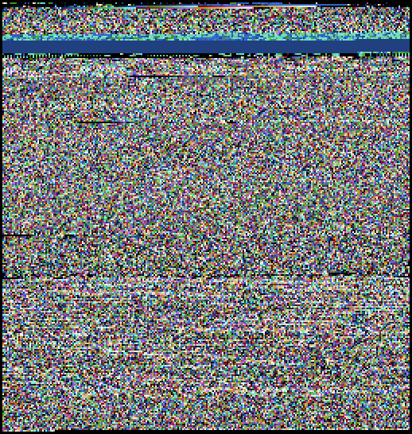

KDOC 241: jpg画像のバイナリを眺める
この文書のステータス
- 作成
- 2024-09-14 貴島
- レビュー
- 2024-10-28 貴島
概要
JPG画像のバイナリを眺める。
データ
Figure 1: PNGファイルバイナリの可視化
Figure 2: 画像として見る
xxd ./buseum/202501010002_2/tree.jpg | head -n 30
00000000: ffd8 ffe0 0010 4a46 4946 0001 0100 0001 ......JFIF...... 00000010: 0001 0000 ffdb 0084 0005 0505 0505 0505 ................ 00000020: 0606 0508 0807 0808 0b0a 0909 0a0b 110c ................ 00000030: 0d0c 0d0c 111a 1013 1010 1310 1a17 1b16 ................ 00000040: 1516 1b17 2920 1c1c 2029 2f27 2527 2f39 ....) .. )/'%'/9 00000050: 3333 3947 4447 5d5d 7d01 0505 0505 0505 339GDG]]}....... 00000060: 0506 0605 0808 0708 080b 0a09 090a 0b11 ................ 00000070: 0c0d 0c0d 0c11 1a10 1310 1013 101a 171b ................ 00000080: 1615 161b 1729 201c 1c20 292f 2725 272f .....) .. )/'%'/ 00000090: 3933 3339 4744 475d 5d7d ffc2 0011 0801 9339GDG]]}...... 000000a0: a902 8003 0122 0002 1101 0311 01ff c400 .....".......... 000000b0: 3500 0002 0301 0101 0100 0000 0000 0000 5............... 000000c0: 0000 0102 0003 0405 0607 0801 0101 0101 ................ 000000d0: 0101 0101 0000 0000 0000 0000 0001 0203 ................ 000000e0: 0405 0607 ffda 000c 0301 0002 1003 1000 ................ 000000f0: 0000 ec0b 27f4 2fc4 a166 cab2 f352 3169 ....'./..f...R1i 00000100: 0463 4b1c 88c6 208c 5563 1952 3ca4 8f25 .cK... .Uc.R<..% 00000110: 4964 4ae5 9059 66dc 6f05 fd9e df97 d9e1 IdJ..Yf.o....... 00000120: a7a6 df27 8fa7 ea1e 326b 813a 9cff 006f ...'....2k.:...o 00000130: 8925 9359 ae3c b123 c448 f048 f048 f048 .%.Y.<.#.H.H.H.H 00000140: e048 f1a4 9606 5439 1238 123c 123c 103c .H....T9.8.<.<.< 00000150: 123c 103c 2b96 0690 5912 b164 5ae5 812b .<.<+...Y..dZ..+ 00000160: 1649 6b5b 56c0 9d6a 7877 e7cb 474e 4859 .Ik[V..jxw..GNHY 00000170: ae55 c9a5 8c55 4928 2318 5258 48f2 542f .U...UI(#.RXH.T/ 00000180: 0467 3284 b22d 46c2 68ec 70cf 9fd3 b3d1 .g2..-F.h.p..... 00000190: f8fb b9f4 fa1e bf9d cf9f ecf7 183c 76be .............<v. 000001a0: 99e8 f9de fafa 38e3 18d7 d1c0 66b8 f7f3 ......8.....f... 000001b0: e79a 1378 aa3c b948 f292 3c5a e3c4 48f1 ...x.<.H..<Z..H. 000001c0: 5258 1163 4458 d048 f152 3c5a e3c6 5238 RX.cDX.H.R<Z..R8 000001d0: 6943 8163 4123 c2b8 f152 3010 5812 b5b0 iC.cA#...R0.X...
xxd ./buseum/202501010002_2/tree.jpg | tail -n 30
000070b0: a35b 8e11 6dee e315 fc0b 83f0 3f8d adfb .[..m.......?...
000070c0: 6cd6 fd0c d5fd b91a ab78 4bd0 d4fd 12f4 l........xK.....
000070d0: 3517 d12f 427f a25e 84ff 0044 bd09 2fca 5../B..^...D../.
000070e0: 9327 fb5f 627f a492 fa49 f624 3ee3 efc2 .'._b....I.$>...
000070f0: 35b0 b9a3 bd92 e4d2 ed7f 711e 42ed c50c 5.........q.B...
00007100: 93d9 1a9d 212f 4359 fe54 fd0f 687f 913f ....!/CY.T..h..?
00007110: f89e d35f eccf d0f6 9fda 67b5 3fcb fb9e ..._......g.?...
00007120: d756 f4be e8f6 bfda fba3 db3a 697d d1ed .V.........:i}..
00007130: 8abf d2fb a3db 12ff 0061 9ed4 bff9 e7e8 .........a......
00007140: 4b9a ed7a 1252 e6bf eba1 2df9 895d b992 K..z.R....-..]..
00007150: b1f4 63a2 5588 935b a24f 743e 9124 fe91 ..c.U..[.Ot>.$..
00007160: f588 fa46 c4df f846 c83f cb89 0dde 940d ...F...F.?......
00007170: 36eb f0a0 692c fe14 084d 54e0 9adc f67f 6...i,...MT.....
00007180: db8f a1ec f77f 871f 4341 7e5c 7d0d 06f1 ........CA~\}...
00007190: 05ff 0013 43f6 e3e8 69af a21f f117 4515 ....C...i.....E.
000071a0: fd24 57d4 c778 931f ea7e a27f 54bd 48f5 .$W..x...~..T.H.
000071b0: 72f5 34ea abee 69a5 b5ff 0066 9be9 f722 r.4...i....f..."
000071c0: beaf b90f fcc8 aeeb fb12 55cc e88a 5e42 ..........U...^B
000071d0: ec2e c26b 63cb 82ec c5d9 885d 6c8d e2c5 ...kc......]l...
000071e0: 5d45 6b73 f91f 9896 f62b 23e6 2f32 2bb9 ]Eks.....+#./2+.
000071f0: 1786 991c 1123 1426 8496 442b ebea 2efc .....#.&..D+....
00007200: 3cc5 664c f0cd 7044 5752 2fa1 1fe0 7d8e <.fL..pDWR/...}.
00007210: e8ec 8fec 7584 3448 7157 b8df 429d 3431 ....u.4HqW..B.41
00007220: eeff 00e8 c5d9 5bbd c7b9 21b5 91a5 818f ......[...!.....
00007230: b8ec cd8c 9359 7b0e b23e e3b1 9263 5b31 .....Y{..>...c[1
00007240: f71a 593c cc62 ed94 bad8 ebad 8f97 6bfe ..Y<.b........k.
00007250: c6de d8c0 934b bfa0 afa3 ec35 d7a1 e652 .....K.....5...R
00007260: dcdb 23ee 3ee3 ee79 99cb b12a e0a9 8a84 ..#.>..y...*....
00007270: c424 8424 cc0b 067c 0bb7 0f22 e8c9 8e1e .$.$...|..."....
00007280: 42ec 5607 8e0d 243a c3a1 e192 b793 ffd9 B.V...$:........
file ./buseum/202501010002_2/tree.jpg
./buseum/202501010002_2/tree.jpg: JPEG image data, JFIF standard 1.01, aspect ratio, density 1x1, segment length 16, progressive, precision 8, 640x425, components 3
du -sh ./buseum/202501010002_2/tree.jpg
40K ./buseum/202501010002_2/tree.jpg
stat ./buseum/202501010002_2/tree.jpg
File: ./buseum/202501010002_2/tree.jpg Size: 29328 Blocks: 80 IO Block: 4096 regular file Device: 37h/55d Inode: 16522514 Links: 1 Access: (0664/-rw-rw-r--) Uid: ( 1000/ orange) Gid: ( 1000/ orange) Access: 2024-09-14 21:15:51.457426859 +0900 Modify: 2024-08-07 23:35:02.290185261 +0900 Change: 2024-08-07 23:35:02.290185261 +0900 Birth: -
グレー化
グレー化すると、どうなるかを見る。

Figure 3: PNGファイルバイナリの可視化
Figure 4: 画像として見る
メモ
観察した。
元画像。
- ノイズらしく見える部分が多くを占める。存在に偏りがある部分もあって、横縞に見える。白い横縞、黒い横縞
- PNGと比べて、値に偏りがある部分が多い。つまり圧縮率が低いということだろうか
- 黒色が数10バイト続き、線になっている部分が全体的に見られる
- ヘッダーにJFIFという文字列が見える
- ヘッダーがなめらかなグラデーションのようになっている部分がある
グレー化。
- 上部に全く同じ値の領域ができた。太い横線となっている
- 太い横線の上部は2色だけのノイズらしくなっている
- 太い横線の下部は、黒による縦縞が見られる。1バイトの点になっているような部分もある
- グレー化すると、RGB的にどういうことになるのかわかっていない
- 下側3分の1に、細い横縞が多く見られるようになった
- 黒い横縞は少しある
- ヘッダー部分になめらかなグラデーションが複数見える。カラー時よりも数が多く見える
- 真ん中あたりは、特徴のないノイズに見える
関連
- KDOC 213: PNG画像のバイナリを眺める。画像バイナリを鑑賞するのが共通している